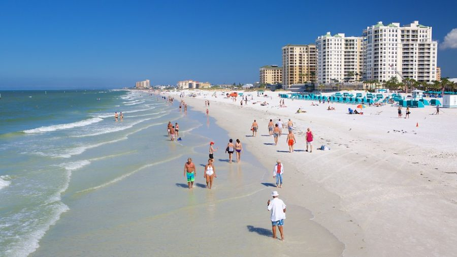

About Us
Located by the Clearwater Municipal Marina on Clearwater Beach, A Fisherman's Life was founded by Clown
McNonexistent and has been loved by all the fictional customers that have used our services.
About
Clearwater Beach:
Clearwater
Beach includes a resort area and a residential area on the Gulf of Mexico in Pinellas County on
the west central coast of Florida. Located just west over the Intracoastal Waterway by way of the
Clearwater Memorial Causeway from the city of Clearwater, Florida, of which it is part, Clearwater Beach
is at a geographic latitude of 27.57 N and longitude 82.48 W.
Clearwater Beach is characterized by white sand beaches stretching for 2.5 miles (4 km) along
the Gulf and sits on a barrier island. It has a full marina on the Intracoastal Waterway side and is
linked on the south by a short bridge to another barrier island called Sand Key, where Sand Key Park is
located.
The area offers shopping, restaurants, and activities such as parasailing, jet ski
rentals, boat tours
(with a common sighting of dolphins in the Gulf waters), miniature golf, fishing charters, and "pirate
ship" cruises.
Clearwater has frequently been ranked one of the best beaches in the United
States. Its Sandpearl resort was named one of the best beach resorts in the U.S. In January 2013,
Clearwater Beach was awarded
the designation of Florida's Best Beach Town by a USA Today reader poll ranking 10 Florida beach
destinations.
From Wikipedia
Fishing Hot Spots in the Clearwater/St-Petersburg Area to help plan your trip!
CLICK HERE